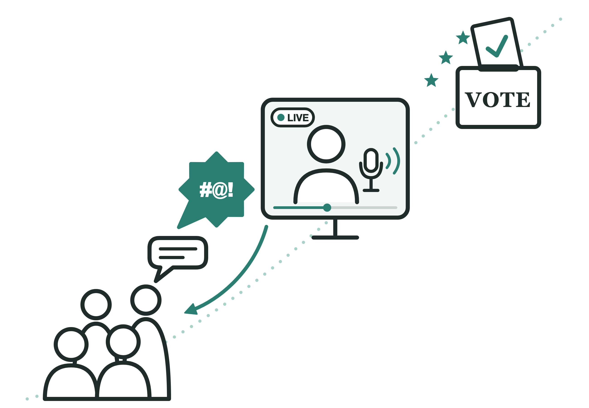

Political communication & social media
Hello, I’m Siyu.
I am a third-year PhD candidate in the Department of Media and Communication at City University of Hong Kong. I am currently supervised by Prof. Xinzhi Zhang, following supervision by Prof. Jonathan Jianhua Zhu from 2024 to 2026.
I study political influencers, livestreaming, monetization, and influencer–audience interactions. My research asks how political communication takes shape through ongoing exchanges between creators and their audiences, and how money structures opportunities to be seen and heard.
Before my PhD, I worked as a magazine journalist covering technology companies, finance, and the people behind the stories. My earlier journalism experience includes NJU Hezhenlu and RUC News Workshop. Outside research, you’ll often find me hiking with a camera.
What I study
Political influencers
Creators who discuss politics and build audiences on social media.
Livestream interactions
How creators and audiences respond to one another through live video, chat, and paid messages.
Political participation
How watching, paying, and participating relate to political voice and engagement.
Money, visibility & voice
FROM PAID VISIBILITY TO POLITICAL VOICE
What can a paid message buy?
I study how viewers use donations and paid messages to seek visibility and a voice in political livestreams. My work examines the relationship between monetary participation, creators’ selection of audience messages, and the incorporation of those messages into live discussion.
When does paying to be seen become an opportunity to be heard? And how do platform features and influencer practices shape whose contributions receive attention?
Current research

FEATURED PROJECTThe Dynamic Co-Construction of Political Incivility: Synchronous Influencer-Audience Interactions in U.S. Election Livestreams on YouTube
My current work examines synchronous influencer–audience interactions in U.S. election livestreams on YouTube, exploring how political incivility is co-constructed as these exchanges unfold.
CONFERENCE PAPER · ICA 2026
Work in progress
Monetizing politics on YouTube: How influencer and streaming features shape audience monetary participation
Motivational and situational factors influencing cross-cutting discussion and selective avoidance on social media: A three-wave panel study of surveillance, social interaction, and algorithmic personalization
From Paid Visibility to Political Voice: How Selective Curation and Discursive Incorporation Shape Audience Participation in YouTube Political Livestreams
When Seeing Is No Longer Believing: An LLM-Assisted Analysis of Epistemic Practices in Fact-Checking AI-Generated Misinformation
Watching, Paying and Participating: Do Online Audience Engagement Repertoires Substitute for or Mobilize Activist Political Participation? A U.S.-U.K. Comparison
Let’s connect
I welcome conversations with scholars studying political communication and social media influencers across different regions, and opportunities for future collaboration.
szhang886-c@my.cityu.edu.hk